ГИДРАВЛИЧЕСКИЙ УСИЛИТЕЛЬ ТОРМОЗНОЙ СИСТЕМЫ (для моделей с правосторонним рулевым управлением) > РАЗБОРКА |
| 1. СНИМИТЕ КРОНШТЕЙН БЛОКА УПРАВЛЕНИЯ РАБОЧИМИ ЦИЛИНДРАМИ ТОРМОЗОВ № 1 |
| 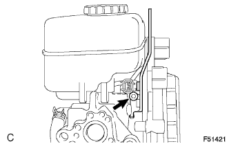 |
С помощью шестигранного ключа на 5 мм выверните болт и снимите кронштейн блока управления рабочими цилиндрами тормозов № 1.
| 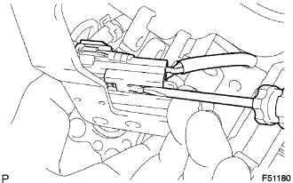 |
С помощью отвертки отсоедините разъем датчика уровня тормозной жидкости от кронштейна блока управления рабочими цилиндрами тормозов № 1.
| 2. СНИМИТЕ БАЧОК ГЛАВНОГО ЦИЛИНДРА ТОРМОЗНОЙ СИСТЕМЫ В СБОРЕ |
| 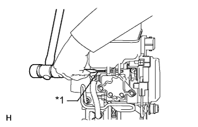 |
С помощью бородка с тонким цилиндрическим концом и молотка извлеките штифт из бачка главного цилиндра тормозной системы.
| *1 | Бородок с тонким цилиндрическим концом |
| 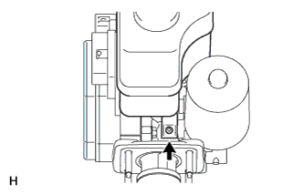 |
Выверните винт и снимите бачок главного цилиндра тормозной системы в сборе.
Снимите крышку наливного отверстия бачка главного цилиндра.
| 3. СНИМИТЕ УПЛОТНИТЕЛЬНУЮ ШАЙБУ БАЧКА ГЛАВНОГО ЦИЛИНДРА ТОРМОЗНОЙ СИСТЕМЫ |
 |
Снимите 3 уплотнительных шайбы бачка с бачка главного цилиндра.
| 4. СНИМИТЕ ШЛАНГ БЛОКА УПРАВЛЕНИЯ РАБОЧИМИ ЦИЛИНДРАМИ ТОРМОЗОВ № 1 |
 |
С помощью плоскогубцев сдвиньте 2 фиксатора и снимите шланг блока управления рабочими цилиндрами тормозов и 2 фиксатора.
| 5. СНИМИТЕ ТРУБОПРОВОД БЛОКА УПРАВЛЕНИЯ РАБОЧИМИ ЦИЛИНДРАМИ ТОРМОЗОВ № 1 |
| 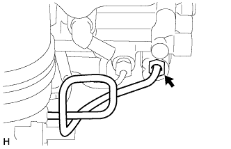 |
С помощью разрезной головки снимите трубопровод блока управления рабочими цилиндрами тормозов № 1.
| 6. СНИМИТЕ УСИЛИТЕЛЬ ТОРМОЗНОЙ СИСТЕМЫ С НАСОСОМ ГИДРОАККУМУЛЯТОРА В СБОРЕ |
| 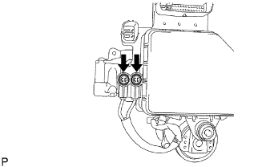 |
С помощью отвертки снимите 2 заглушки.
| 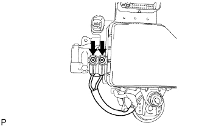 |
Выверните 2 винта и отсоедините жгут проводов от электромагнитного клапана главного цилиндра.
 |
С помощью отвертки снимите фиксатор.
 |
Снимите усилитель тормозной системы с насосом гидроаккумулятора в сборе с главного цилиндра тормозной системы.
Снимите 2 кольца насоса усилителя тормозной системы и 2 втулки насоса усилителя тормозной системы с усилителя тормозной системы с насосом гидроаккумулятора в сборе.
 |
С помощью шестигранного ключа на 4 мм снимите 2 штифта.
| 7. СНИМИТЕ КРОНШТЕЙН НАСОСА УСИЛИТЕЛЯ ТОРМОЗНОЙ СИСТЕМЫ № 1 |
| 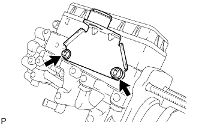 |
С помощью шестигранного ключа на 5 мм выверните 2 болта и снимите кронштейн насоса усилителя тормозной системы № 1 с электромагнитного клапана главного цилиндра тормозной системы.
Снимите втулку насоса усилителя тормозной системы с кронштейна насоса усилителя тормозной системы № 1.
| 8. СНИМИТЕ КРОНШТЕЙН БЛОКА УПРАВЛЕНИЯ РАБОЧИМИ ЦИЛИНДРАМИ ТОРМОЗОВ № 3 |
 |
Выверните болт и снимите кронштейн блока управления рабочими цилиндрами тормозов № 3 с главного цилиндра тормозной системы.
| 9. СНИМИТЕ ТРУБОПРОВОД ГИДРОАККУМУЛЯТОРА УСИЛИТЕЛЯ ТОРМОЗНОЙ СИСТЕМЫ |
 |
Зажмите усилитель тормозной системы с насосом гидроаккумулятора в сборе в тисках.
Снимите гидроаккумулятор усилителя тормозной системы.
Снимите кольцевое уплотнение с гидроаккумулятора усилителя тормозной системы.
Снимите трубопровод гидроаккумулятора усилителя тормозной системы и пружину сжатия.
| 10. СНИМИТЕ ЭЛЕКТРОМАГНИТНЫЙ КЛАПАН ГЛАВНОГО ЦИЛИНДРА |
| 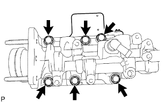 |
Выверните 6 болтов и снимите электромагнитный клапан главного цилиндра.
| 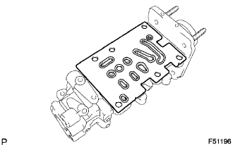 |
Снимите прокладку.
| 11. СНИМИТЕ ВИЛКУ ШТОКА ГЛАВНОГО ЦИЛИНДРА |
 |
Ослабьте контргайку на переходнике управления тягой и снимите вилку штока, а затем отверните контргайку.
| 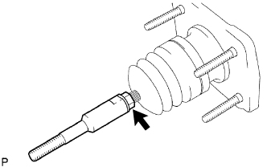 |
Ослабьте контргайку со стороны главного цилиндра тормозной системы и снимите переходник управления тягой, а затем отверните контргайку.
| 12. СНИМИТЕ ЗАЩИТНЫЙ КОЛПАЧОК ГЛАВНОГО ЦИЛИНДРА |
| 13. СНИМИТЕ ПОРШЕНЬ УСИЛИТЕЛЯ ТОРМОЗНОЙ СИСТЕМЫ В СБОРЕ |
| 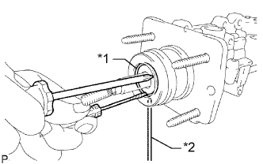 |
Прижав поршень с помощью отвертки, вставьте штифт или подобный предмет в отверстие в корпусе главного цилиндра, чтобы протолкнуть разрезное кольцо, а затем снимите его с помощью другой отвертки.
| *1 | Разрезное кольцо |
| *2 | Колпачок |
Снимите заглушку с поршня.
Снимите поршень, вытянув его по прямой, а не под углом.